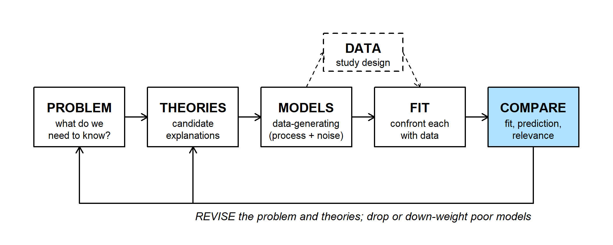
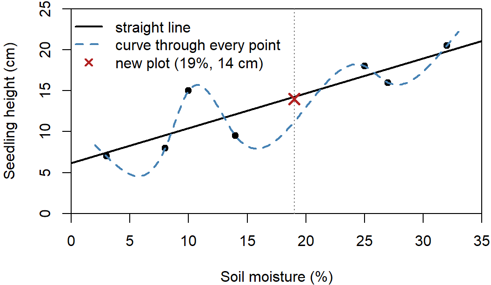
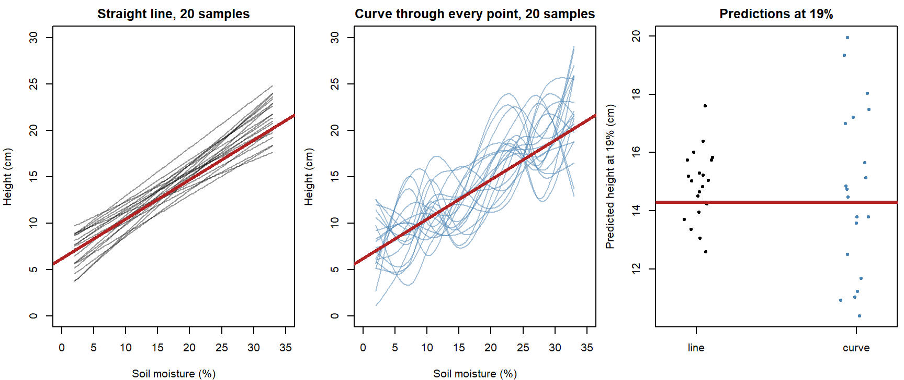
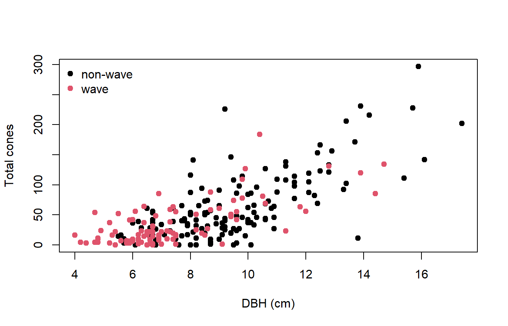
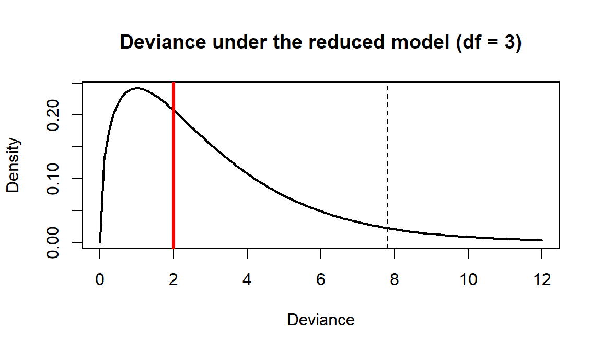
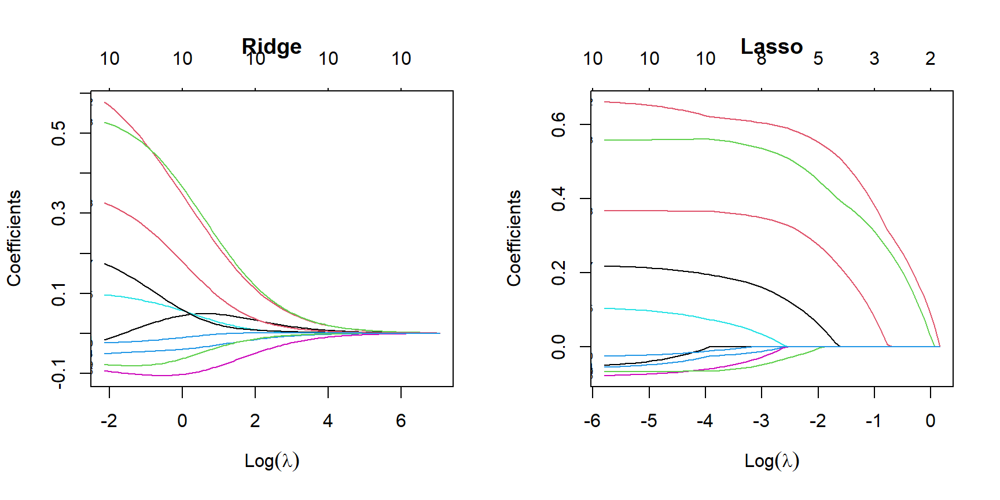
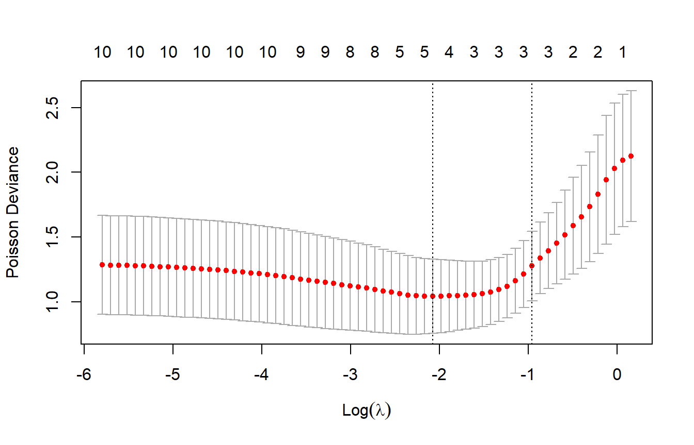
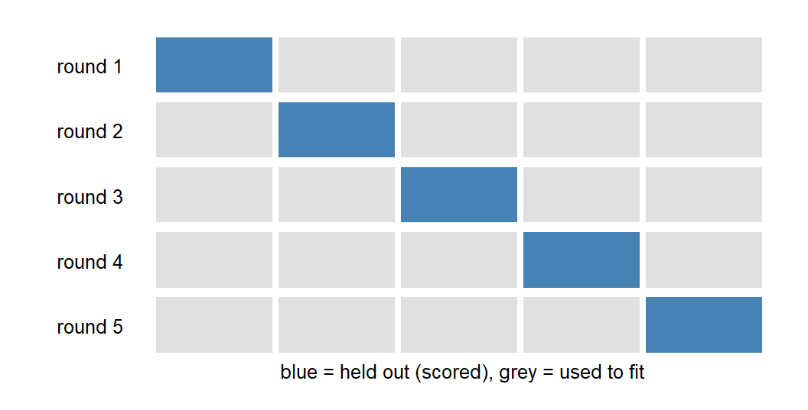
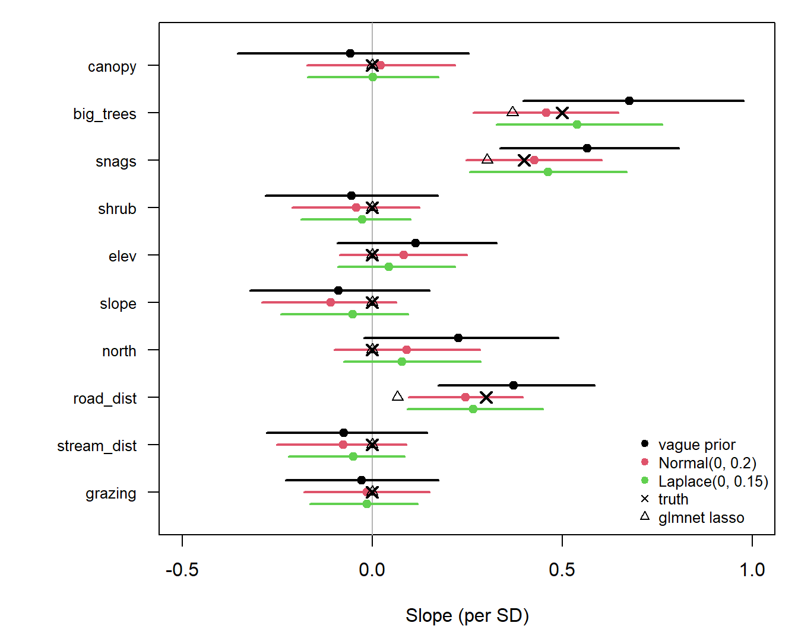
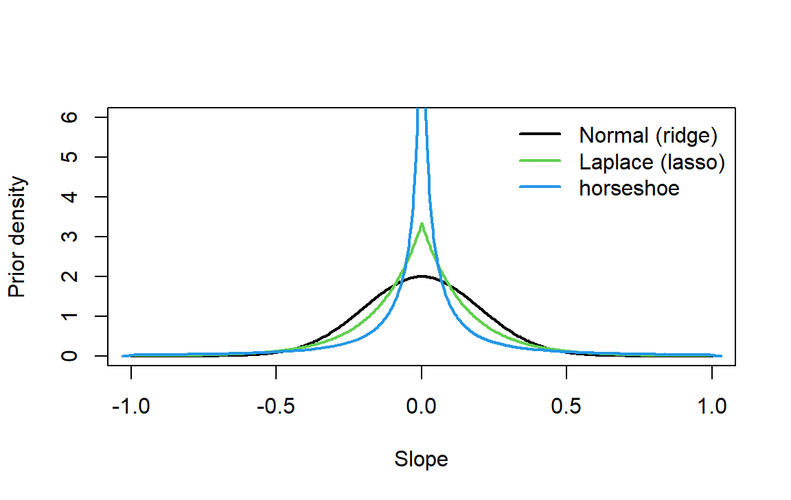

R code from this page is also in the companion script. Packages: emdbook, MASS, glmnet, cmdstanr, loo.
Readings. Bolker, Ecological Models and Data in R, section 6.6 (pp. 267-290). Tredennick, Hooker, Ellner, and Adler (2021), A practical guide to selecting models for exploration, inference, and prediction in ecology, Ecology 102: e03336. For the Bayesian methods, Hooten and Hobbs (2015), A guide to Bayesian model selection for ecologists, Ecological Monographs 85: 3-28.
How do we compare models that differ in complexity? This part covers the most rigorous test (predicting new data), two shortcuts that need only one fit (the likelihood ratio test and AIC), and regularization, which keeps every covariate in a single model and shrinks the coefficients toward 0.

The FIT step gives estimates and their uncertainty for one model at a time. COMPARE weighs models against each other. It has three parts:
Here we focus on part 2, comparing models fit to the same data. This includes:
Adding parameters always improves the fit to the data in hand (see the WOD), so in-sample fit can't answer these questions. The most rigorous test is how well a model predicts new data from the same process:
Because cross-validation takes many refits, we often rely on shortcuts that use a single fit to all the data:
Ridge regression and the lasso take a third route: fit one large model and penalize the size of its coefficients, usually choosing the penalty strength by cross-validation.
Models that pass these tests are corroborated, not proven.
The WOD (a short warm-up exercise at the start of class) gave seven measurements of seedling height and soil moisture, and two models: a straight line and a curve through every point. Both models were used to predict height at 19% moisture, where there were no data.

A perfect fit to seven points says little about prediction. Suppose we repeated the study many times with new seedlings from the same process, refitting both models each time:
Prediction error on new data includes both. More complexity lowers bias but raises variance, so the best predictive model lies somewhere between the extremes.
In the figure below, the study is repeated 20 times. Each sample uses the WOD's moisture values, with heights simulated from the red line plus random noise.

Both models center near the true height at 19% (red line), but the curve's predictions vary more than twice as much (SD 2.9 cm vs. 1.2 cm for the line).
Bolker's balsam fir data (section 6.6): cone counts on 242 trees, some at "wave" sites (where stands regenerate in waves) and some not. Model: \(\text{cones} \sim \text{NegBin}(\mu = a\,\text{DBH}^b, k)\). Do wave sites differ?
The likelihood ratio test is the oldest shortcut. It applies to nested models, where the reduced model is the full model with some parameters fixed (often at 0). Here the reduced model fixes three: wave and non-wave sites share \(a\), \(b\), and \(k\).
Since the full model always fits at least as well, the real question is whether it fits better than extra parameters fitting pure noise would. If the reduced model is true, then in large samples the deviance
\[D = 2(\text{NLL}_{\text{reduced}} - \text{NLL}_{\text{full}})\]
follows a \(\chi^2_r\) distribution, where \(r\) is the number of fixed parameters (Wilks' theorem).
The test:
qchisq(0.95, r)).The 1.92 cutoff for likelihood-based confidence intervals comes from the same result with \(r = 1\): \(\chi^2_1\)'s 95% quantile is 3.84, and \(3.84/2 = 1.92\) on the NLL scale.
library(emdbook)
fir <- na.omit(FirDBHFec[, c("TOTCONES", "DBH", "WAVE_NON")]) # balsam fir, 242 trees
fir$TOTCONES <- round(fir$TOTCONES)
wave <- as.numeric(fir$WAVE_NON) # 1 = non-wave, 2 = wave
plot(TOTCONES ~ DBH, data = fir, col = wave, pch = 19,
xlab = "DBH (cm)", ylab = "Total cones")
legend("topleft", c("non-wave", "wave"), col = 1:2, pch = 19, bty = "n")
# cones ~ NegBin(mu = a * DBH^b, size = k); a, b, k can be vectors (one value per tree)
nll_nb <- function(a, b, k) {
-sum(dnbinom(fir$TOTCONES, mu = a * fir$DBH^b, size = k, log = TRUE))
}
# full model: separate a, b, k for wave and non-wave sites (6 parameters)
nll_full <- function(p) nll_nb(p[1:2][wave], p[3:4][wave], p[5:6][wave])
# no-wave model: one a, b, k for all trees (3 parameters)
nll_nowave <- function(p) nll_nb(p[1], p[2], p[3])
# Nelder-Mead to get close, then BFGS to polish
fit_model <- function(nll, start) {
fit <- optim(start, nll, control = list(maxit = 10000))
optim(fit$par, nll, method = "BFGS", control = list(maxit = 10000))
}
fit_full <- fit_model(nll_full, c(1, 1, 2, 2, 1, 1))
fit_nowave <- fit_model(nll_nowave, c(1, 2, 1))
c(full = fit_full$value, nowave = fit_nowave$value) # min NLL## full nowave
## 1135.011 1136.015# deviance = 2 * (NLL_reduced - NLL_full) ~ chi-square, df = difference in parameters
deviance <- 2 * (fit_nowave$value - fit_full$value)
deviance## [1] 2.009181qchisq(0.95, df = 3) # critical value## [1] 7.814728pchisq(deviance, df = 3, lower.tail = FALSE) # p-value## [1] 0.5705034curve(dchisq(x, df = 3), 0, 12, lwd = 2, xlab = "Deviance", ylab = "Density",
main = "Deviance under the reduced model (df = 3)")
abline(v = qchisq(0.95, 3), lty = 2)
abline(v = deviance, col = "red", lwd = 3)
With \(D = 2.01\), well below the cutoff, we keep the no-wave model.
# Poisson, no wave effect (2 parameters)
nll_pois <- function(p) -sum(dpois(fir$TOTCONES, p[1] * fir$DBH^p[2], log = TRUE))
fit_pois <- fit_model(nll_pois, c(1, 2))
2 * (fit_pois$value - fit_nowave$value)## [1] 4051.633Question: Is the Poisson model nested in the negative binomial? Can we use an LRT here?
Keeping the reduced model doesn't show that wave and non-wave trees are alike. It shows that these 242 trees can't distinguish them.
\[\text{AIC} = -2\log\mathcal{L}(\hat\theta) + 2k\]
AIC can rank any set of models fit to the same response data, nested or not. The \(2k\) term estimates how much the in-sample fit overstates the fit to new data (the problem in the WOD). The AIC penalty handout shows where it comes from.
# two intermediate models: wave changes only a and k (5 parameters), or only b (4)
nll_constb <- function(p) nll_nb(p[1:2][wave], p[3], p[4:5][wave])
nll_constak <- function(p) nll_nb(p[1], p[2:3][wave], p[4])
fit_constb <- fit_model(nll_constb, c(1, 1, 2, 1, 1))
fit_constak <- fit_model(nll_constak, c(1, 2, 2, 1))
fits <- list(full = fit_full, const_b = fit_constb, const_ak = fit_constak,
no_wave = fit_nowave, poisson = fit_pois)
n <- nrow(fir)
aic_tab <- data.frame(model = names(fits),
k = sapply(fits, function(f) length(f$par)),
nll = sapply(fits, function(f) f$value))
aic_tab$AIC <- 2 * aic_tab$nll + 2 * aic_tab$k # -2 log L + 2k
aic_tab$dAIC <- aic_tab$AIC - min(aic_tab$AIC)
aic_tab$weight <- exp(-aic_tab$dAIC / 2) / sum(exp(-aic_tab$dAIC / 2))
aic_tab$AICc <- aic_tab$AIC + 2 * aic_tab$k * (aic_tab$k + 1) / (n - aic_tab$k - 1)
aic_tab$BIC <- 2 * aic_tab$nll + log(n) * aic_tab$k # -2 log L + k log(n)
aic_tab <- aic_tab[order(aic_tab$AIC), ]
rownames(aic_tab) <- NULL| model | k | nll | AIC | dAIC | weight | AICc | BIC |
|---|---|---|---|---|---|---|---|
| no_wave | 3 | 1136.02 | 2278.03 | 0.00 | 0.52 | 2278.13 | 2288.50 |
| const_ak | 4 | 1135.76 | 2279.52 | 1.48 | 0.25 | 2279.68 | 2293.47 |
| const_b | 5 | 1135.13 | 2280.27 | 2.24 | 0.17 | 2280.52 | 2297.71 |
| full | 6 | 1135.01 | 2282.02 | 3.99 | 0.07 | 2282.38 | 2302.95 |
| poisson | 2 | 3161.83 | 6327.66 | 4049.63 | 0.00 | 6327.71 | 6334.64 |
Question: The no-wave model has weight 0.52. Is there a 52% chance it's the true model?
Look at const_ak. It has one more parameter than the no-wave model and an NLL only 0.26 lower, yet it is just 1.48 AIC units behind. A useless parameter costs at most 2 AIC units, so being within 2 of the best model isn't evidence of support (Arnold 2010, J. Wildl. Manage. 74: 1175-1178).
Example: brown creepers. Counts at 50 point-count stations, with 10 standardized habitat covariates. These data are simulated, so we know the truth: only big trees, snags, and road distance matter.
Ten covariates give \(2^{10} = 1024\) possible subsets. Instead of searching them all, we can keep all 10 and penalize the size of the coefficients:
\[\text{ridge: } \text{NLL}(\beta) + \lambda\sum_j \beta_j^2 \qquad\qquad \text{lasso: } \text{NLL}(\beta) + \lambda\sum_j |\beta_j|\]
AIC charges for each parameter; these penalties grow with the size of the coefficients. One \(\lambda\) applies to every coefficient, so the covariates are standardized first. The lasso penalty has a corner at 0 that can set coefficients to exactly 0 (try the slider in Penalties as budgets).
library(MASS)
library(glmnet)
# brown creeper counts at 50 point-count stations, 10 standardized habitat covariates.
# Simulated, so we know the truth: only big_trees, snags, and road_dist matter.
covars <- c("canopy", "big_trees", "snags", "shrub", "elev", "slope",
"north", "road_dist", "stream_dist", "grazing")
beta_true <- c(0, 0.5, 0.4, 0, 0, 0, 0, 0.3, 0, 0)
cov_mat <- diag(10)
cov_mat[1, 2] <- cov_mat[2, 1] <- 0.6 # canopy ~ big trees
cov_mat[1, 4] <- cov_mat[4, 1] <- -0.4 # canopy ~ shrub
cov_mat[5, 6] <- cov_mat[6, 5] <- 0.5 # elevation ~ slope
set.seed(19)
X <- mvrnorm(50, rep(0, 10), cov_mat)
colnames(X) <- covars
creepers <- rpois(50, exp(log(2) + X %*% beta_true)) # log(mu) = log(2) + X beta
# ordinary MLE with every covariate: no estimate is exactly 0
fit_glm <- glm(creepers ~ X, family = poisson)
round(coef(fit_glm)[-1], 2)## Xcanopy Xbig_trees Xsnags Xshrub Xelev Xslope
## -0.06 0.67 0.56 -0.06 0.11 -0.08
## Xnorth Xroad_dist Xstream_dist Xgrazing
## 0.22 0.37 -0.07 -0.03# all 2^10 = 1024 subsets, ranked by AIC
subsets <- expand.grid(rep(list(c(FALSE, TRUE)), 10))
subset_aic <- apply(subsets, 1, function(use) {
if (!any(use)) return(AIC(glm(creepers ~ 1, family = poisson)))
AIC(glm(creepers ~ X[, use, drop = FALSE], family = poisson))
})
covars[unlist(subsets[which.min(subset_aic), ])] # best subset## [1] "big_trees" "snags" "north" "road_dist"sum(subset_aic - min(subset_aic) < 2) # models within 2 AIC units## [1] 8# AIC table of the top models: k counts the intercept
subset_tab <- data.frame(
model = apply(subsets, 1, function(use) {
if (!any(use)) "(intercept only)" else paste(covars[use], collapse = " + ")
}),
k = rowSums(subsets) + 1,
AIC = subset_aic)
subset_tab$dAIC <- subset_tab$AIC - min(subset_tab$AIC)
subset_tab$weight <- exp(-subset_tab$dAIC / 2) / sum(exp(-subset_tab$dAIC / 2))
subset_tab <- subset_tab[order(subset_tab$AIC), ]
rownames(subset_tab) <- NULL| model | k | AIC | dAIC | weight |
|---|---|---|---|---|
| big_trees + snags + north + road_dist | 5 | 139.40 | 0.00 | 0.08 |
| big_trees + snags + road_dist | 4 | 140.25 | 0.86 | 0.05 |
| big_trees + snags + north + road_dist + stream_dist | 6 | 141.12 | 1.72 | 0.03 |
| big_trees + snags + elev + north + road_dist | 6 | 141.15 | 1.75 | 0.03 |
| big_trees + snags + slope + north + road_dist | 6 | 141.35 | 1.95 | 0.03 |
| big_trees + snags + shrub + north + road_dist | 6 | 141.36 | 1.96 | 0.03 |
| canopy + big_trees + snags + north + road_dist | 6 | 141.38 | 1.98 | 0.03 |
| big_trees + snags + north + road_dist + grazing | 6 | 141.39 | 1.99 | 0.03 |
| big_trees + snags + road_dist + stream_dist | 5 | 141.63 | 2.23 | 0.03 |
| big_trees + snags + road_dist + grazing | 5 | 141.89 | 2.49 | 0.02 |
Question: Which covariates show up in nearly every top model? Which come and go?
# penalized NLL: NLL(beta) + lambda * sum(beta^2) (ridge) or lambda * sum(|beta|) (lasso)
fit_ridge <- glmnet(X, creepers, family = "poisson", alpha = 0)
fit_lasso <- glmnet(X, creepers, family = "poisson", alpha = 1)
par(mfrow = c(1, 2))
plot(fit_ridge, xvar = "lambda", label = TRUE, main = "Ridge")
plot(fit_lasso, xvar = "lambda", label = TRUE, main = "Lasso")
par(mfrow = c(1, 1))Question: Read the lasso panel from right to left (from a big penalty to none). Which covariates enter first?
# choose lambda by 10-fold cross-validation: predict each held-out tenth
set.seed(746)
cv_lasso <- cv.glmnet(X, creepers, family = "poisson", alpha = 1)
plot(cv_lasso) # left dashed line: lambda.min; right: lambda.1se (simplest within 1 SE)
coef_lasso <- coef(cv_lasso, s = "lambda.1se")[-1]
# same cross-validation for ridge (alpha = 0); same folds, so the two are comparable
set.seed(746)
cv_ridge <- cv.glmnet(X, creepers, family = "poisson", alpha = 0)
coef_ridge <- coef(cv_ridge, s = "lambda.1se")[-1] # try s = "lambda.min": much less shrinkage
round(data.frame(truth = beta_true,
MLE = coef(fit_glm)[-1],
AIC_best = ifelse(unlist(subsets[which.min(subset_aic), ]), 1, 0),
ridge = coef_ridge,
lasso = coef_lasso,
row.names = covars), 2)## truth MLE AIC_best ridge lasso
## canopy 0.0 -0.06 0 0.05 0.00
## big_trees 0.5 0.67 1 0.20 0.37
## snags 0.4 0.56 1 0.22 0.30
## shrub 0.0 -0.06 0 -0.03 0.00
## elev 0.0 0.11 0 0.03 0.00
## slope 0.0 -0.08 0 -0.08 0.00
## north 0.0 0.22 1 0.02 0.00
## road_dist 0.3 0.37 1 0.08 0.07
## stream_dist 0.0 -0.07 0 -0.03 0.00
## grazing 0.0 -0.03 0 0.00 0.00Question: The lasso kept road distance but estimates its effect at 0.07; the truth is 0.3. Is the lasso broken?
Neither AIC nor the lasso reliably recovers the true model. In 40 simulated data sets like this one, the AIC-best subset matched the true set of covariates 12 times and the lasso 13 times.
Q1. AIC's best creeper model kept northness (several models within 2 units, top weight small); the lasso dropped it. Which covariates would you report as "important," and how would you word it?
Q2. In a real survey, the lasso sets grazing to exactly 0. A manager concludes that expanding grazing won't affect creepers. Do you agree?
These tools come up in a lab on Bd infection in frogs, which fits a logistic model to a 60-pond survey with 8 pond features (data). This part offers another way to picture regularization, as a budget on coefficient size, along with tips for glmnet and an outline of how cross-validation picks the penalty.
A penalty can also be pictured as a budget on coefficient size.
In practice we tune \(\lambda\) (usually by cross-validation), not \(t\); the budget is a way to picture what \(\lambda\) does.
One coefficient. Take \(\text{NLL}(\beta) = (\beta - 0.4)^2\), so the MLE is 0.4.
Drag the slider. The left panel shows the lasso objective, with a dot at its minimum; the right panel tracks the lasso and ridge estimates as \(\lambda\) increases.
Question: Why does the lasso estimate stop at exactly 0 once \(\lambda \ge 0.8\), while the ridge estimate never gets there?
glmnet(X, y, family = "binomial", alpha = ): alpha = 0 is ridge, alpha = 1 (the default) is lasso.y = cbind(failures, successes), the reverse of glm()'s order.glmnet scales the NLL by the sample size, so its \(\lambda\) isn't the \(\lambda\) in a penalty you code by hand. Compare coefficients, not \(\lambda\) values.
lambda.1se is the largest \(\lambda\) (the simplest model) whose score is within one SE of the best.This part brings the same ideas to models fit by MCMC. A ridge penalty is equivalent to a Normal prior, so regularization has a direct Bayesian counterpart. WAIC and LOO estimate predictive performance from the posterior, and shrinkage priors do the job of ridge and the lasso while keeping the full posterior uncertainty.
AIC needs a single best-fit \(\hat\theta\) and a count of parameters. An MCMC fit gives a whole posterior instead, and priors constrain parameters to different degrees, so the parameter count is no longer clear-cut. WAIC and LOO (section 3) handle both problems.
Eight survey routes each report a change in log abundance, \(y_i \sim \text{Normal}(\mu, \sigma = 0.15)\), where \(\mu\) is the regional trend.
# 8 survey routes: change in log abundance ~ Normal(mu, sigma = 0.15); mu = regional trend
route_y <- c(0.12, -0.05, 0.20, 0.08, -0.10, 0.15, 0.02, 0.10)
sigma <- 0.15
tau <- 0.05 # prior: mu ~ Normal(0, tau)
lambda <- 1 / (2 * tau^2) # ridge penalty that matches it
nll_mu <- function(mu) sapply(mu, function(m) sum((route_y - m)^2) / (2 * sigma^2))
pnll_mu <- function(mu) nll_mu(mu) + lambda * mu^2 # ridge
neg_log_post <- function(mu) nll_mu(mu) - dnorm(mu, 0, tau, log = TRUE) # Bayes
c(MLE = mean(route_y),
ridge = optimize(pnll_mu, c(-1, 1))$minimum,
posterior_mode = optimize(neg_log_post, c(-1, 1))$minimum)## MLE ridge posterior_mode
## 0.06500000 0.03058824 0.03058824Drag the prior SD \(\tau\). The posterior, and the ridge \(\lambda\) that matches it, shift between the data and 0.
Question: Which prior matches the lasso penalty, \(\lambda|\mu|\)?
log_lik[i] for every observation, in generated quantities.library(cmdstanr)
library(loo)
# fir NegBin power law; G = 1: one a, b, k for all trees; G = 2: separate for wave/non-wave
fir_code <- "
data {
int<lower=1> N;
int<lower=1> G;
array[N] int<lower=0> cones;
vector<lower=0>[N] dbh;
array[N] int<lower=1, upper=G> grp;
}
parameters {
vector[G] log_a;
vector[G] b;
vector<lower=0>[G] k;
}
model {
log_a ~ normal(0, 5);
b ~ normal(0, 5);
k ~ exponential(0.1);
cones ~ neg_binomial_2(exp(log_a[grp]) .* pow(dbh, b[grp]), k[grp]);
}
generated quantities {
vector[N] log_lik; // one value per tree, for WAIC and LOO
for (i in 1:N)
log_lik[i] = neg_binomial_2_lpmf(cones[i] | exp(log_a[grp[i]]) * dbh[i]^b[grp[i]], k[grp[i]]);
}
"
fir_model <- cmdstan_model(write_stan_file(fir_code))
fit_fir <- function(G) {
grp <- if (G == 1) rep(1L, nrow(fir)) else wave
fir_model$sample(data = list(N = nrow(fir), G = G, cones = fir$TOTCONES, dbh = fir$DBH,
grp = grp),
chains = 4, parallel_chains = 4, seed = 746, refresh = 0,
show_messages = FALSE)
}
fit_nowave_b <- fit_fir(1)
fit_full_b <- fit_fir(2)# DIC (Bolker 6.6.3): pD = mean deviance - deviance at posterior means; DIC = Dhat + 2 pD
dic <- function(fit, G) {
grp <- if (G == 1) rep(1L, nrow(fir)) else wave
d_bar <- mean(-2 * rowSums(fit$draws("log_lik", format = "matrix")))
pm <- function(v) colMeans(fit$draws(v, format = "matrix"))
d_hat <- -2 * sum(dnbinom(fir$TOTCONES, mu = exp(pm("log_a")[grp]) * fir$DBH^pm("b")[grp],
size = pm("k")[grp], log = TRUE))
c(DIC = d_hat + 2 * (d_bar - d_hat), pD = d_bar - d_hat)
}
waic_nowave <- waic(fit_nowave_b$draws("log_lik", format = "matrix"))
waic_full <- waic(fit_full_b$draws("log_lik", format = "matrix"))
loo_nowave <- fit_nowave_b$loo()
loo_full <- fit_full_b$loo()
loo_nowave # elpd_loo, p_loo, looic, and the Pareto k check##
## Computed from 4000 by 242 log-likelihood matrix.
##
## Estimate SE
## elpd_loo -1139.3 15.1
## p_loo 3.5 0.6
## looic 2278.6 30.1
## ------
## MCSE of elpd_loo is 0.0.
## MCSE and ESS estimates assume MCMC draws (r_eff in [0.3, 1.1]).
##
## All Pareto k estimates are good (k < 0.7).
## See help('pareto-k-diagnostic') for details.# the same two models, four ways (lower is better; penalties: k, pD, p_waic, p_loo)
ic_tab <- rbind(
AIC = aic_tab$AIC[match(c("no_wave", "full"), aic_tab$model)],
DIC = c(dic(fit_nowave_b, 1)["DIC"], dic(fit_full_b, 2)["DIC"]),
WAIC = c(waic_nowave$estimates["waic", 1], waic_full$estimates["waic", 1]),
LOOIC = c(loo_nowave$estimates["looic", 1], loo_full$estimates["looic", 1]))
colnames(ic_tab) <- c("no_wave", "full")
round(ic_tab, 1)## no_wave full
## AIC 2278.0 2282.0
## DIC 2278.0 2281.9
## WAIC 2278.6 2282.7
## LOOIC 2278.6 2282.7fir_comp <- loo_compare(list(no_wave = loo_nowave, full = loo_full))
fir_comp## elpd_diff se_diff
## no_wave 0.0 0.0
## full -2.1 1.8Question: The full model is 2.1 elpd behind, SE 1.8. What can you conclude?
Unlike AIC, LOO gives a standard error for the difference between two models.
The prior's scale plays the role of \(\lambda\): a Normal prior on the slopes corresponds to ridge, a Laplace prior to the lasso. Here are the brown creepers from Regularization again, with three different priors on the 10 slopes:
# creepers again: Poisson regression; prior on the slopes is Normal(0, s) or Laplace(0, s)
pois_code <- "
data {
int<lower=1> N;
int<lower=1> K;
matrix[N, K] X;
array[N] int<lower=0> y;
int<lower=1, upper=2> prior; // 1 = Normal, 2 = Laplace
real<lower=0> s;
}
parameters {
real b0;
vector[K] beta;
}
model {
b0 ~ normal(0, 5);
if (prior == 1) beta ~ normal(0, s);
else beta ~ double_exponential(0, s);
y ~ poisson_log(b0 + X * beta);
}
generated quantities {
vector[N] log_lik;
for (i in 1:N) log_lik[i] = poisson_log_lpmf(y[i] | b0 + X[i] * beta);
}
"
pois_model <- cmdstan_model(write_stan_file(pois_code))
fit_creepers <- function(prior, s) {
pois_model$sample(data = list(N = 50, K = 10, X = X, y = creepers, prior = prior, s = s),
chains = 4, parallel_chains = 4, seed = 746, refresh = 0,
show_messages = FALSE)
}
fits_shrink <- list(vague = fit_creepers(1, 10), normal = fit_creepers(1, 0.2),
laplace = fit_creepers(2, 0.15))# posterior medians and 90% intervals for each slope, under each prior; x = truth
post_sum <- lapply(fits_shrink, function(f) {
as.matrix(f$summary("beta", "median", ~quantile(.x, c(0.05, 0.95)))[, -1])
})
par(mar = c(4, 7, 1, 1))
plot(NA, xlim = c(-0.5, 1), ylim = c(0.5, 10.5), yaxt = "n", xlab = "Slope (per SD)", ylab = "")
axis(2, at = 10:1, labels = covars, las = 1, cex.axis = 0.8)
abline(v = 0, col = "grey70")
offsets <- c(vague = 0.25, normal = 0, laplace = -0.25)
for (p in names(post_sum)) {
yy <- (10:1) + offsets[p]
segments(post_sum[[p]][, 2], yy, post_sum[[p]][, 3], yy, lwd = 2, col = match(p, names(post_sum)))
points(post_sum[[p]][, 1], yy, pch = 19, col = match(p, names(post_sum)))
}
points(beta_true, 10:1, pch = 4, cex = 1.3, lwd = 2)
points(coef_lasso, 10:1, pch = 2)
legend("bottomright", c("vague prior", "Normal(0, 0.2)", "Laplace(0, 0.15)", "truth", "glmnet lasso"),
col = c(1:3, 1, 1), pch = c(19, 19, 19, 4, 2), bty = "n", cex = 0.8)
sapply(fits_shrink, function(f) f$loo()$estimates["p_loo", 1]) # effective parameters shrink## vague normal laplace
## 9.141144 7.834112 7.121993loo_compare(lapply(fits_shrink, function(f) f$loo()))## elpd_diff se_diff
## laplace 0.0 0.0
## normal -1.5 1.2
## vague -1.5 1.6Question: The cross-validated lasso in Regularization set northness to exactly 0. The Laplace posterior says 0.08 (90% interval -0.07 to 0.28). Which is more honest?
Horseshoe prior (sketch only): a taller spike at 0 plus heavier tails, so small effects shrink hard and large ones barely shrink.
# prior shapes: Normal, Laplace, horseshoe (simulated: Normal with half-Cauchy scale)
set.seed(746)
hs <- rnorm(1e6, 0, 0.1 * abs(rcauchy(1e6)))
curve(dnorm(x, 0, 0.2), -1, 1, n = 501, lwd = 2, ylim = c(0, 6), xlab = "Slope", ylab = "Prior density")
curve(dexp(abs(x), 1 / 0.15) / 2, -1, 1, n = 501, add = TRUE, lwd = 2, col = 3)
lines(density(hs[abs(hs) < 1], bw = 0.01, n = 1024), lwd = 2, col = 4)
legend("topright", c("Normal (ridge)", "Laplace (lasso)", "horseshoe"), col = c(1, 3, 4),
lwd = 2, bty = "n")
Choosing the prior scale amounts to choosing \(\lambda\). Scales can be compared by LOO, or the scale can be estimated from the data with a hierarchical prior (covered later in the course).
Q1. LOO prefers the no-wave fir model by 2.1 elpd (SE 1.8). A colleague writes "wave regeneration has no effect on cone production." Do you agree?
Q2. With a Laplace prior, northness gets a posterior median of 0.08; the cross-validated lasso said exactly 0. Which would you report, and why?